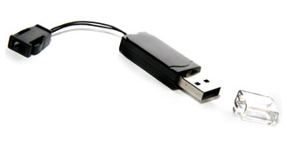
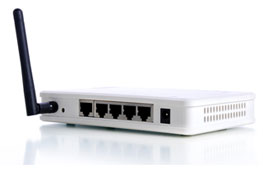

|
Unoserv.se är ett är ett nystartad IT konsultföretag som sysslar med programmering. Vi bygger windows, spel, mobil, och webapplikationer.. Stor vikt läggs på noggrannhet och kvalitet – kunden ska alltid känna sig helt nöjd med vårt arbete...
Analysering, konstruktion och programmering av system- och programvara:
- Utförande av analyser av användarnas behov och problem.
- Utveckling, tillverkning, framtagning av dokumentation samt leverans av specialgjord system, och programvara baserad på kundspecifik order.
- Skrivande av program efter anvisningar från användare.

|

Unoserv Labs
En IT-konsult i Stockholm som förser dig med kompetens inom programmering och systemutveckling.
Vi kan hjälpa dig att göra det snabbare.
Vi skapar smarta lösningar.
- Datakonsultverksamhet, (IT-konsult), utveckling av kundspecifik mjukvara.
- Mediaproduktion, system för webbdesign.
- Systemdesign, data.
- Personaluthyrning, näringsidkare utan anställda (uthyrning av sig själv som programmerare).
- Projektledning, it-utveckling.
- Systemutveckling, data.
- Testning av nyutvecklad programvara (kundanpassad).
- Webbproduktion.
- Webbdesign.
- Webbprogrammering.
|